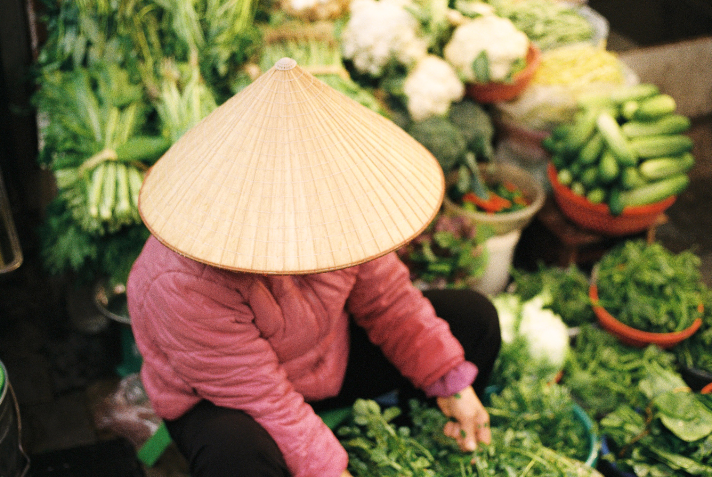

Culvera AI, farming intelligence for the decisions that matter
Culvera turns climate, soil, satellite and market data into practical farm level decision support, helping growers make better informed choices about crops, inputs, timing, risk and expected outcomes.
How Culvera WorksTHE INFORMATION GAP
High stakes farming decisions are still made with fragmented information.
Vietnam is one of the world's major agricultural producers and exporters. Yet many smallholder farmers still make decisions about planting, fertiliser, irrigation, harvest timing and sales without access to the forecasting and analytical tools available to larger agricultural businesses.
Climate volatility, changing soil conditions, input costs, market uncertainty and increasingly complex export requirements make those decisions even harder.
Culvera is being built to close that information gap.
CLIMATE UNCERTAINTY
Extreme weather can change planting and harvest conditions quickly.
SOIL AND INPUT DECISIONS
Farmers need practical guidance from soil information, not another dashboard of raw measurements.
MARKET UNCERTAINTY
The crop that performs agronomically is not always the crop that produces the strongest economic outcome.
COMPLIANCE RISK
For export crops, quality and residue requirements can determine whether an otherwise successful harvest reaches its intended market.
FROM DATA TO DECISIONS
One decision layer across the farm.
Culvera brings environmental, agronomic and market information together so users can move from asking "what is happening?" to "what should I consider doing next?"
CROP AND SEASON SUITABILITY
Assess which supported crops are better matched to a location and planting season.
SOIL AWARE INPUT PLANNING
Translate soil characteristics into more contextual fertiliser and soil management guidance.
CLIMATE RISK
Identify weather conditions that may affect planting, irrigation or harvest decisions.
YIELD AND HARVEST PLANNING
Estimate potential yield ranges and help identify more appropriate harvest windows.
MARKET CONTEXT
Add market and price information to agronomic recommendations so decisions are not made on yield alone.
HOW IT WORKS
Complex data in. Clear decisions out.
LOCATE
A user selects or enters a farm location.
UNDERSTAND
Culvera assembles relevant environmental and agricultural information, including weather, soil and satellite derived vegetation signals.
ANALYSE
Machine learning models and agronomic logic evaluate crop suitability, potential yield, seasonal risk and other decision factors.
ACT
The platform converts the analysis into understandable recommendations, risk indicators and planning information.
Current prototype data sources include NASA POWER weather data, SoilGrids soil information and Sentinel2 satellite imagery. Culvera is designed to combine global data infrastructure with increasingly local field data as pilots progress.
CURRENT FIELD FOCUS · VIETNAM
Helping turn cadmium risk into an earlier decision.
In Dong Thap, durian growers, cooperatives and exporters face a problem that begins long before fruit reaches the border.
Cadmium uptake is influenced by soil chemistry, particularly acidic conditions, as well as fertiliser and farm management practices. Yet export testing often occurs only after significant time and money have already been invested in the crop.
Culvera is developing a cadmium risk decision layer designed to help identify higher risk orchard blocks earlier, support more targeted testing and give growers and supply chain partners more time to act before harvest.
IDENTIFY RISK EARLIER
Combine farm, soil, management and environmental information to identify where additional attention may be needed.
PRIORITISE TESTING
Use risk information to support smarter decisions about where laboratory testing is most valuable.
SUPPORT INTERVENTION
Help translate measurements such as soil pH and laboratory results into clearer management and remediation decisions.
Illustrative example. Not derived from live orchard data.
LAB DATA REMAINS ESSENTIAL
Culvera does not claim that satellite imagery or public soil datasets directly measure cadmium. Laboratory soil and fruit measurements remain essential. Our role is to combine ground truth measurements with environmental, spatial and farm management data to improve decision support around cadmium risk.
A SHARED DECISION LAYER
Built for farmers. Useful across the agricultural system.
Better farm level information becomes more valuable when it can also support the organisations farmers already depend on.
FARMERS
Practical guidance that turns complex data into understandable next actions.
COOPERATIVES
Better visibility across member farms and stronger coordination around production, risk and testing.
EXPORTERS AND PACKING PARTNERS
Earlier insight into supply conditions and potential compliance risk.
RESEARCH AND EXTENSION PARTNERS
A structured way to connect field observations, agronomic expertise and real world outcomes.
DESIGNED WITH ADOPTION IN MIND
Building around how women farmers already learn and innovate.

Women account for nearly half of Vietnam's agricultural workforce and play a central role in the day to day operation of farms and rural households.
Yet access to agricultural technology, formal advisory networks, finance and decision making authority is not always distributed equally.
Research in Vietnam also shows something important for technology design: women and men do not necessarily encounter or adopt agricultural innovation in the same way.
Women often exchange agricultural knowledge through family members, neighbouring farmers and trusted community relationships, while formal agricultural institutions may play a larger role in how men encounter new technologies.
Climate and economic shocks can intensify the need for this support. When men migrate for wage work, women may be left managing agricultural production alongside household and caregiving responsibilities.
What this means for Culvera
COMMUNITY FIRST PILOTS
We aim to work with trusted women lead farmers, community organisations and women's networks so new practices can spread through relationships that already exist.
PEER TO PEER LEARNING
Successful recommendations should be easy to share between farmers rather than remaining locked inside an individual account.
INCREMENTAL ACTION
Recommendations should favour clear, practical changes that can be introduced and evaluated step by step.
ACCESS BEYOND THE SMARTPHONE
As Culvera moves into field pilots, we are exploring offline first and SMS supported delivery for areas where connectivity or smartphone access may be limited.
Inclusive design is not a separate feature of Culvera. It is part of whether the platform can work at all.
If agricultural intelligence is intended for smallholder farming, it has to reflect the social systems through which farming knowledge is actually shared.
See what agricultural decision intelligence can look like.
Explore the Culvera prototype and see how location, soil, climate and satellite information can become practical farm level guidance.